西堂 picks · 4/24
如何用 Grok Bot 做内容？ bot 军团全部开源（一键安装）
@Jackywxsz · Jacky无限生长 · Sat Oct 10 06:36:22 +0000 2026
这一个月，我每天高频在用grok bot，它现在已经是我最得力的生产力选择了。并且对比了多款personal agent产品，我觉得它的多bot协作体验是目前最好的。
我现在几乎把所有业务都搬到了grok bot，来编排云端多bot协同自动化生产，我预判这是未来的发展趋势，所以还是建议大家尽早熟悉这个模式。
现在我的日常状态是：全天只跟一个“幕僚长”说话，只负责在主入口口喷观点和最终拍板，剩下的找热点、做调研、写初稿、做配图、修脚本，全在后台自动交接、落盘成文件，每天安静流转。
我把这套跑通的内容军团配置全部开源，文末有一键安装的全部链接，拿去就能直接使用。当然，比起照搬指令，我更希望你花五分钟看懂背后的流转逻辑，这样才能在使用中更游刃有余。
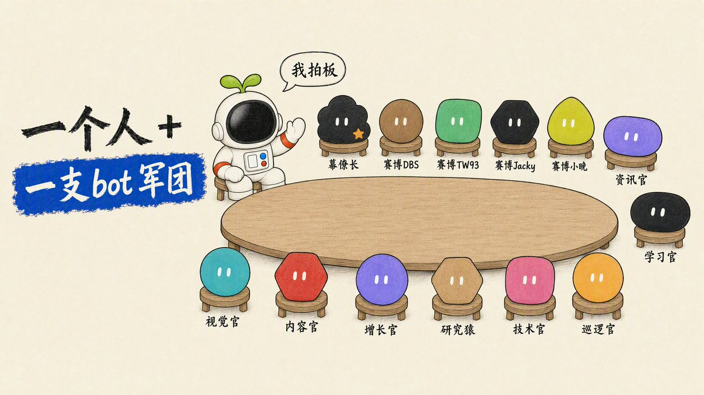
一、五层架构：每个层级只回答一个问题
我见过社群很多小伙伴反馈搭建多 Agent (an AI that takes steps on its own to finish a task) ，越用越混乱，我觉得根源在于没理解grok bot主Agent入口设置，以及单一专业bot职责设定的玩法。
一个 bot 既负责调研又负责写稿，最后两头都做不好
我把舰队自上而下严格拆成五层。看这张全景图时，先看谁在跟我对接，再看信息怎么往下流转，最后看谁在底层兜底。
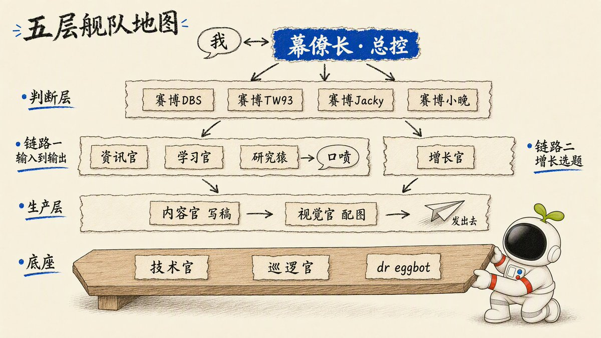
1. 总控层：人的精力只有一份，对话入口必须唯一
全舰队最核心的原则：我只跟幕僚长说话。
bot 一多，人脑根本记不住谁负责什么、谁交了没交。所以我把所有交互收拢到一个对话框里。幕僚长负责理解我的意图、拆解任务单、往下派发给专线 bot，做完验收后，再压成一条几十个字的短报推给我。
在主对话框里，我永远只做两件事：派活，以及验收。那些动辄几千字的调研报告、成稿草案，全部由具体 bot 落成硬盘文件，主对话框里永远干干净净。
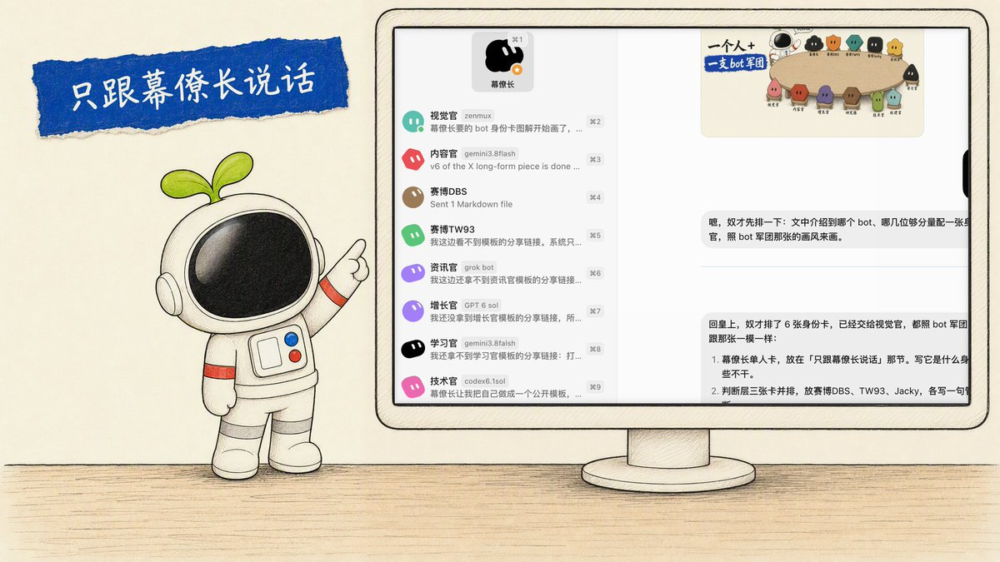
幕僚长是整个系统的第一主进程，必须最先建。后面每加一个 bot，都要写死一张明确的职责卡：只干什么、坚决不干什么、交付标准是什么。幕僚长派活不用猜，各个 bot 之间也绝对不会抢活。
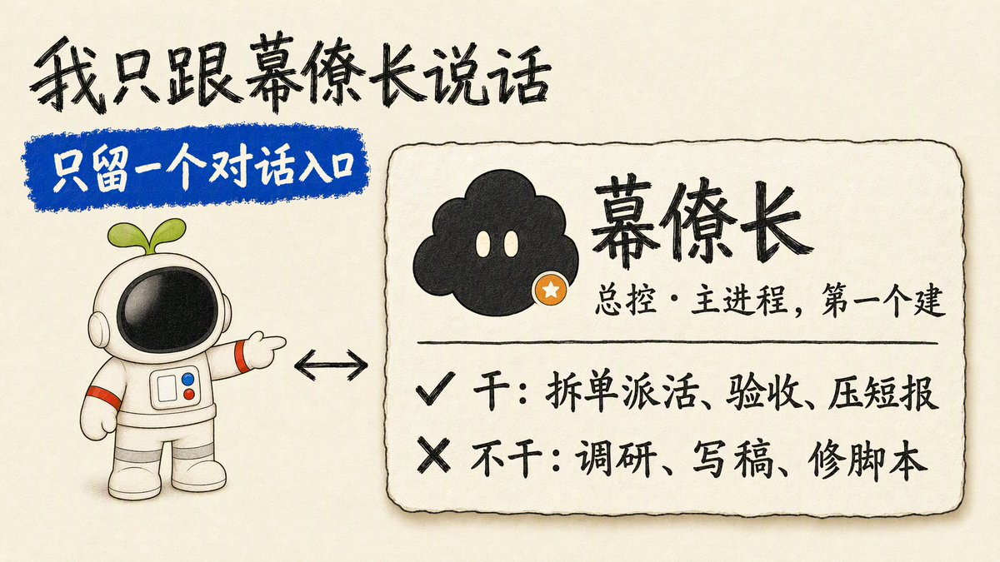
2. 判断层：机器没有价值观，业务取舍必须靠领航员
哪件事值得做、商业逻辑通不通，大模型自己判断不了。总控层下面，我设了四个赛博领航员。它们不负责写字，也不负责作图，只负责给出极具偏好的判断。
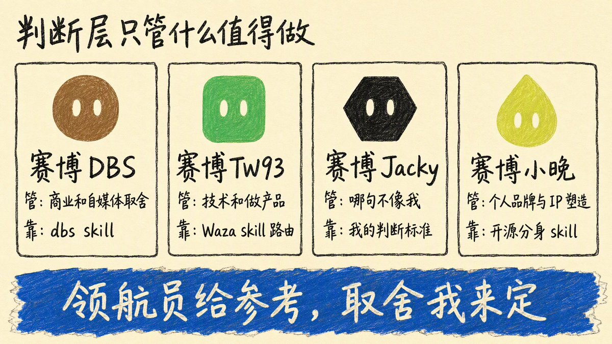
- 赛博 DBS（管商业与内容取舍）：专门用来把关自媒体商业定位与内容选题。指令其实极简，每轮严格调用 dontbesilent 开源的 dbs skill。商业上拿不准的事，先跟它聊透。它让我印证了一件事：提示词 (prompt (the instruction you give the AI))写得再长，不如底层挂一个好 skill。
- 赛博 TW93（管技术与工程规范）：我文科生出身，现在自己写代码做自动化，最缺严谨的工程思维。这个 bot 底层直接挂载 Tw93 开源的 Waza skill，规定每轮先通过 Waza 做任务路由，查根因、审代码、写架构，各走各的通道。
- 赛博小晚（管个人品牌与 IP 塑造）：挂载开源的 cyber-xiaowan skill。她像一个轻量级的品牌思考操作系统，能把一团乱麻的灵感快速拆解出层次，判断问题出在哪一层、当下动哪个点最有效。
- 赛博 Jacky（我的个人分身）：装着我的所有实战经验、审美偏好和禁忌清单。AI 能写出辞藻华丽的句子，但它天然不知道哪句话“不像我”。这套偏好只能由我一条条喂进去，目前还在持续打磨，这次就暂时不公开了。
判断层给的是专业维度上的参考，最终的定夺权依然在我手里。
3. 输入链路：把一个领域嚼碎吃透
在信息过载的时代，内容拉开差距的不是写得有多快，而是你的输入质量有多高。输入链路的目标，就是把公域信息消化为带着你个人视角的认知。
- 资讯官：每个工作日早上 8:40 准时交付 AI 早报，精选 3 到 6 条高价值动态，并针对每条附带一段第一人称的锐评草稿。
- 学习官：陪我把一个全新领域彻底学透，通过交互式推演，把复杂的底层概念沉淀为公开学习卡片。
- 研究猿：专项深度调研工具，只在点名时启动，专门顺藤摸瓜找第一手公开源，输出带准确出处的结构化短报。
输入足够扎实之后，我就直接在主对话框里开启口喷。观点是立身之本，永远不能外包给 AI。我只管把观点和逻辑一口气喷出来，剩下的工序全部丢给生产层。
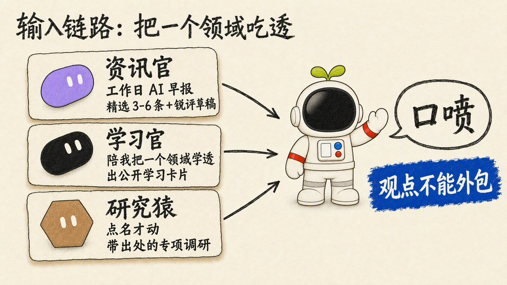
4. 增长链路：选题大权独揽，严禁发散
很多博主做内容越做越散，今天追热点，明天发感悟，根本原因就是选题权没有收敛。
在我的系统里，选题权唯一归属于增长官。它每个工作日早上 9:21 扫描素材库，结合我的固定栏目与商业变现目标，出一份精准的选题简报。
原则只有一条：不在既定栏目规划里的选题，一律直接砍掉。
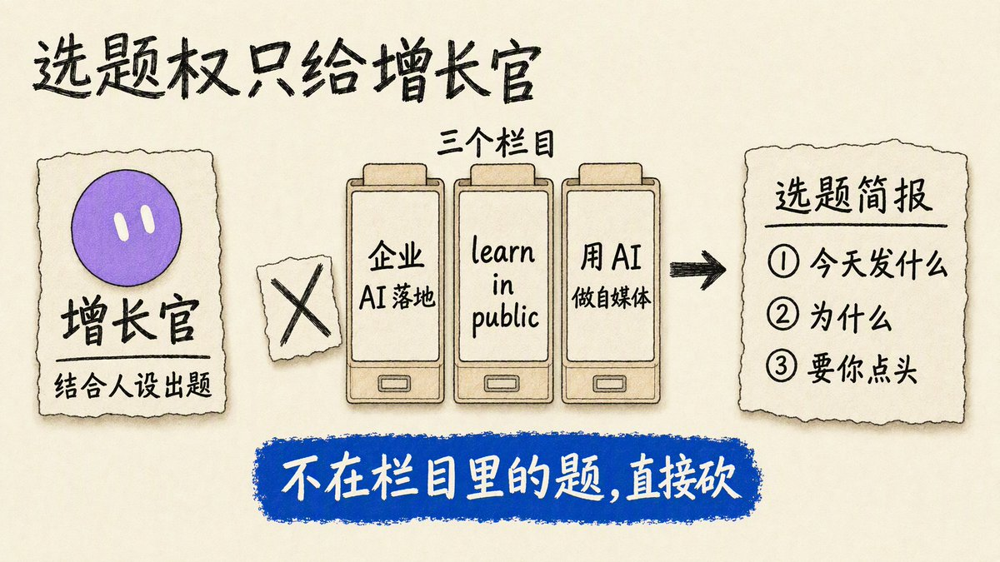
5. 生产层与底座：标准彻底固化，系统稳定巡检
生产层只做执行：内容官负责把口喷精修为成稿，视觉官负责出一整套统一画风的纸蓝手绘配图。模型、风格、排版规矩全部写死在 skill 里，不靠随机抽卡碰运气。
底座则由技术官与巡逻官撑起：技术官负责修脚本、打通多机网络与通道；巡逻官负责盯死所有定时任务 (scheduled task (a job that runs at set times))，系统全绿时保持沉默，只有脚本报错亮红灯时才出来报警。
如果后面还要新增 bot，只交给现成的 dr eggbot。它会像面试官一样问清楚这个岗位的输入、输出和边界，坚持一个原则：一个 bot 终生只干一件事。
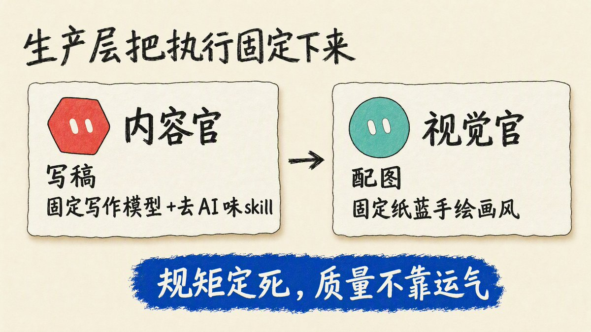
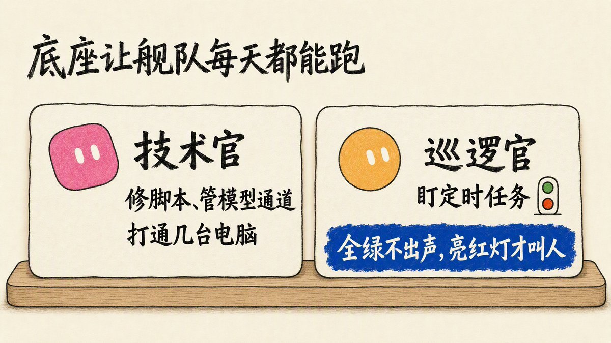
———
二、流转闭环：bot 之间怎么协作，才不会乱成一锅粥？
多 bot 协作最容易翻车的地方，就是人成了中间的传话筒。要实现真正的顺畅交接，背后必须有两套铁律：
- 所有交付物必须强制落盘：对话框只用来同步状态，真正的数据全写进硬盘文件。这样哪怕中间某个 bot 崩溃或者重启，下一个 bot 读文件就能无缝接着干。
- 干活与验收永远物理隔离：写稿的 bot 绝不负责终审，修脚本的 bot 绝不能自己说修好了。
整套舰队的日常流转与职责交接矩阵如下：
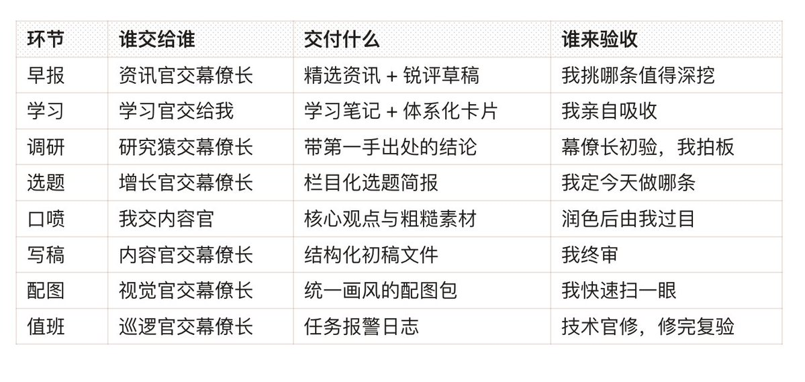
拿我平时写一篇长文的真实流水线来说：
选题定下后，早报、学习卡片和专项调研组成了底层原料；我对着手机把核心判断和野蛮想法一口气口喷出来；内容官接手进行结构化润色；我粗审无误后，丢给 DBS skill 做商业和内容把关；在改稿过程中迸发出的全新偏好与表达标准，顺手回填沉淀进赛博 Jacky。
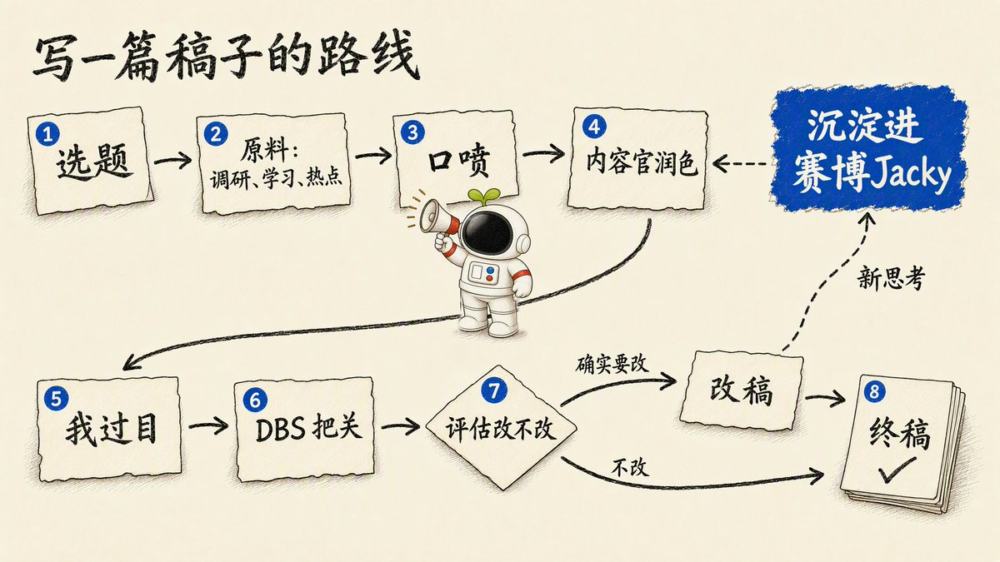
每跑完一篇稿子，我的分身就多记住一条我的偏好。越往后跑，机器越懂我的边界。
———
三、权力边界：机器跑工序，人在哪 5 个节点死死拍板？
很多所谓全自动 AI 账号之所以做不下去，就是把人的权力全部交了出去，最后沦为没有灵魂的垃圾内容农场。
在我的舰队里，机器只负责跑流水化工序，人负责死死守住标准。
在整条链路中，我只在五个地方亲自拍板：
- 选题做哪条，我定：决定今天讨论什么话题，是唯一的战略选择。
- 观点口喷，我亲自说：未经肉身经历提炼出的观点，一律是空洞废话。
- 终稿验收三查，我亲自审：一查有没有私自加戏，二查有没有磨平观点锐度，三查有没有退化成公关腔。
- 发布按钮，我亲手点：全舰队严禁开启任何全自动代发权限，安全红线不能碰。
- 不可逆动作，人工授权：凡是涉及发信、删库、改权限、扣费的花钱操作，必须弹窗等我手动同意。
守住这五道闸门，AI 产出的内容就永远不会脱轨。
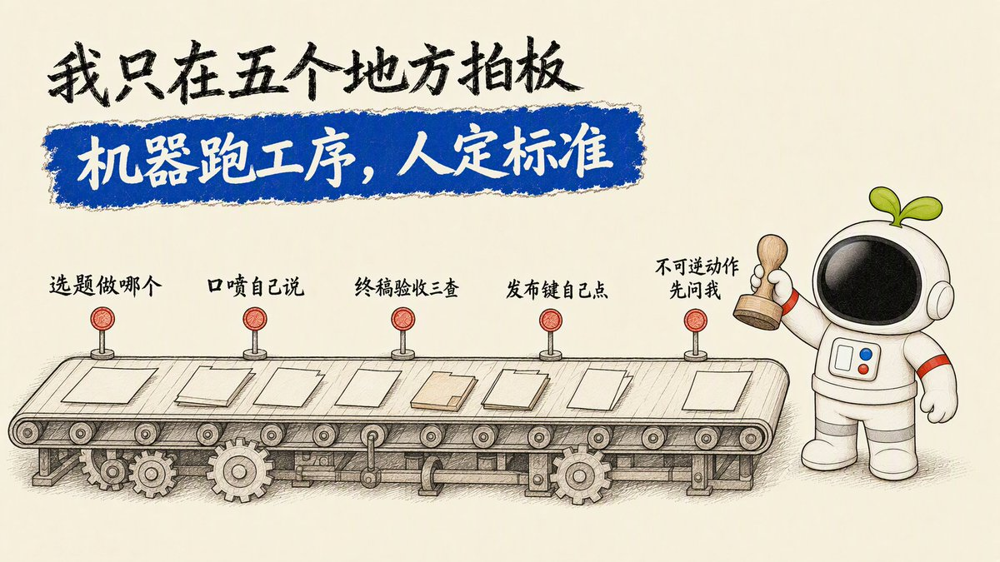
——
四、减法心法与保姆级起跑顺序
要想系统跑得久，先学会怎么删 bot。
这两个月里，我删掉的专职代码台、单平台监控 bot 不计其数。最后提炼出四条裁员标准：
- 没有明确交付文件的，直接删：说不清每天交什么表格、落什么文件的 bot，最后全成了无效陪聊。
- 职责重叠的，坚决合并：两个 bot 都能接的活，最后谁都不会认真做。
- 核心权力唯一化：选题权只在增长官，对话入口只在幕僚长，杜绝多头领导。
- 能加 Skill (a saved how-to the bot can reuse) 的，绝不多建 bot：每增加一个 bot，系统的调度复杂度和故障率就翻一倍。
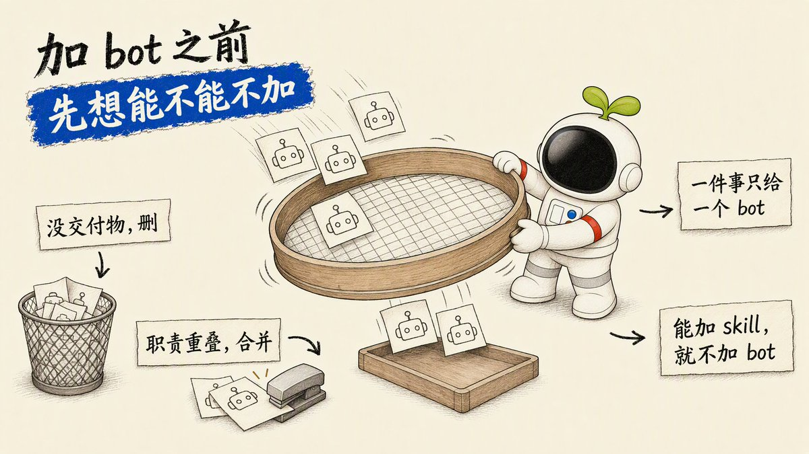
新手起跑的推荐顺序
如果你也想把这套系统搬到自己的 Grok Bot (xAI's AI assistant that comes with its own computer) 里，千万不要一晚上全建齐。推荐按这个节奏渐进搭建：
- 第一天只建幕僚长：从一开始就强迫自己只跟它一个入口说话。
- 挂载一个领航员：按你的需求接入赛博 DBS、赛博小晚或 Waza。
- 跑通一条输入线：资讯官和学习官选一个，先把早报跑起来。
- 接入内容官：用口喷完整跑通一篇文章的产出。
- 系统庞大后再上巡逻官：任务多起来后，再让巡逻官接管监控。
- 后续扩充交给 dr eggbot：严格执行单任务原则。
- 持续训练个人分身：把每一次改稿的判断，变成你自己的规则资产。
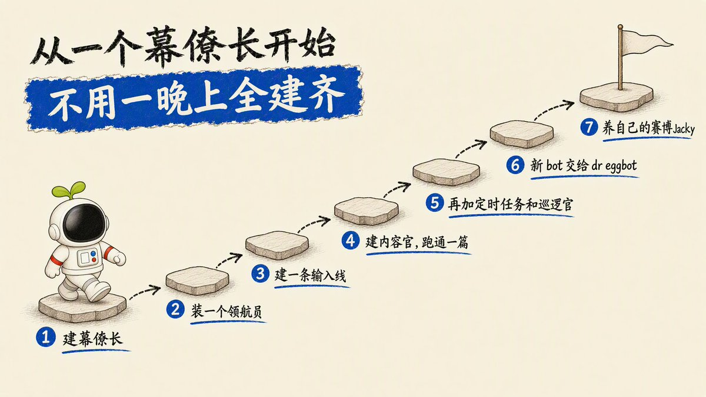
大模型和工具每几个月就会迭代一次，但岗位拆解、文件落盘、异步交接与人机边界这套工作法，才是能伴随你持续产生复利的资产。
———
附录：全套 Bot 开源设定
这里先列每个 bot 的名字和简介。带一键安装链接的完整版放在我的个人官网的文章页了：AI无限生长星球。
- 幕僚长：舰队总控，你只跟它说话，负责拆单、派活、验收与汇报。
- 资讯官：每个工作日早上筛选高价值 AI 动态，并起草第一人称锐评。
- 学习官：把垂直领域吃透，并将认知沉淀为体系化学习卡片。
- 研究猿：专项调研专线，穿透一手来源，输出结论先行的结构化短报。
- 增长官：素材库扫描与选题把关，按栏目筛选每日内容选题。
- 内容官：把口喷与素材精修成高密度可发布的成稿，不代发。
- 视觉官：将文章与逻辑图解转化为统一画风的纸蓝手绘配图。
- 技术官：工程底座，维护模型通道、环境网络与自动化脚本。
- 巡逻官：自动化值班巡检，无事静默，脚本报错亮红灯时即时告警。
- 赛博 DBS：草稿诊断与商业内容润色（需配合 dbs skill）。
- 赛博 TW93：以顶级工程规范审视任务，每轮走 Waza skill 路由。
- dr eggbot：岗位设计师，问清需求后协助你规范化新建单个 bot。
依赖与推荐 Skill 仓库：
- dbs skill（dontbesilent）
- Waza（Tw93）
- 赛博小晚（小晚不在）
- 纸蓝配图 skill（Jacky）
———
后面我会接着分享用 AI 做内容营销落地的实践，这支 bot 舰队怎么迭代也会同步出来，感兴趣可以关注我。
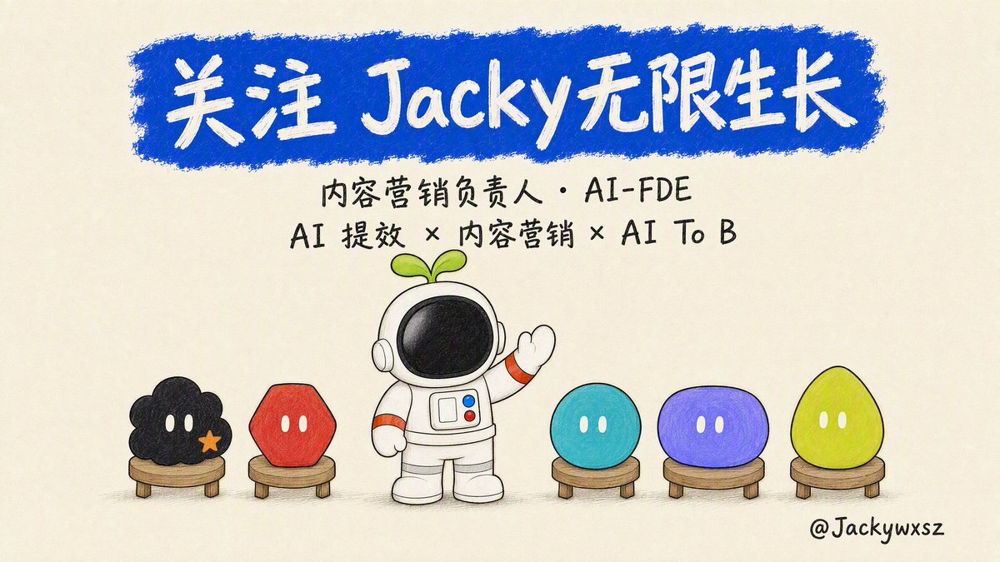
Source: https://x.com/Jackywxsz/status/2108808842045956343
← This week I had my Grok Bot build and ma 做自媒体怎么用好 Grok bot →